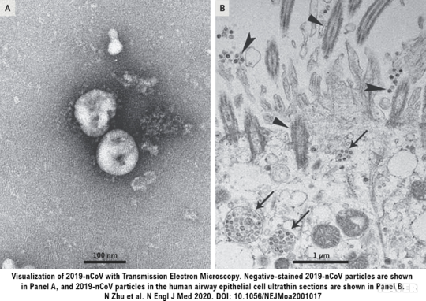

코로나바이러스[Coronavirus]
코로나바이러스(Coronavirus)는 코로나바이러스 과(Family Coronaviridae)에 속하는 바이러스들을 지칭하며
일반적으로 조류 뿐만 아니라 사람을 포함한 다양한 포유류에서도 발견된다.
코로나바이러스는 그 종이 다양하고, 바이러스의 특성과 숙주에 따라서
호흡기와 소화기 감염병을 모두 유발하는 것으로 알려져 있다.
최근 사람에서는 전 세계적으로 문제시되었던 사스(SARS)와 메르스(MERS)처럼
중증의 호흡기 증상을 유발하는 원인체로서 코로나바이러스가 주목받고 있다.
(코로나바이러스의 전자현미경 사진.)
코로나바이러스감염증-19: 신종코로나바이러스 감염증 (우한 폐렴)
2019년 12월부터 중국 우한시 화난 해산물 시장에서 발생한 전염성 폐렴은 사스-코로나바이러스-2(SARS-CoV-2)에 의한
새로운 인체 감염증으로 확인되었다.
초기 화난 해산물 시장에서 거래되는 야생동물에서 사람으로 전파되었을 것으로 추정되나
현재는 사람 간 전파도 이루어지고 있는 것으로 확인되고 있다.
전장 유전체 비교 분석을 통해 박쥐 유래 사스 유사 코로나바이러스(Bat SARS-like coronavirus isolate bat-SL-CoVZC45)와
가장 높은 염기서열 상동성 (89.1%)을 나타내었으며,
사람 코로나바이러스 4종과 상동성 39-43%, 메르스 코로나바이러스 50%, 사스 코로나바이러스 77%의 상동성이 확인되었다.
계통분석 결과 코로나바이러스감염증-19(신종코로나바이러스)는 베타코로나바이러스에 속하는 것으로 밝혀졌다.
2020년 1월 중국에서만 만 명 이상의 감염 확진자와 수백 명 이상의 사망자가 발생하였으며
태국, 일본, 대한민국 등 아시아 각국 및 북미와 유럽 여러 국가에서도 확진자가 발견된 만큼 전세계적인 대응 노력이 필요한 상황이다.

(A: 2019년 코로나바이러스감염증-19의 사진. B: 인체 호흡기 상피세포에 침입한 바이러스)